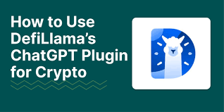

My Accidental Odyssey into Cross-Chain Stablecoin Shenanigans (and Swap Llama's Unexpected Role)
So, picture this: I’m happily sipping my lukewarm tea, scrolling through crypto Twitter (yes, it's a real thing, and yes, it’s as chaotic as it sounds), when a tweet about arbitrage opportunities with stablecoins across different chains catches my eye. Arbitrage – the art of buying low and selling high, the cornerstone of efficient markets, the stuff of legend… or at least, the stuff of slightly obsessive crypto nerds like myself. And honestly, my lukewarm tea suddenly felt very, very cold.
I’ve always been fascinated by stablecoins. The idea of a digital asset pegged to a real-world currency, offering stability in the wild, wild west of cryptocurrency – it’s almost… elegant. Almost. Because, let's be real, the stablecoin world is anything but elegant right now. It’s more like a chaotic dance floor where Tether occasionally trips over its own feet. But the potential for profit? Intriguing.
That's where DefiLlama waltzes in. For those unfamiliar, DefiLlama is essentially a comprehensive aggregator for all things decentralized finance. It's like the Yelp of DeFi, but infinitely more complex, and instead of reviewing restaurants, it's reviewing, well, everything. You want to know the TVL (Total Value Locked) on a specific chain? DefiLlama's got you. Need the APR (Annual Percentage Rate) on a specific lending protocol? DefiLlama's your guy (or algorithm, I guess). And it became my unexpected guide in this little stablecoin adventure.
My initial plan was simple: identify stablecoins with price discrepancies across different chains – let's say, USDC on Ethereum trading slightly higher than USDC on Polygon – and exploit that difference through swaps. Easy peasy, right? Wrong. My first attempt, fueled by an overconfidence born of too much YouTube and too little sleep, resulted in a less-than-stellar outcome. Let's just say I learned the hard way about transaction fees eating into my profits faster than a hungry hippo at a buffet.

But I persevered, because, well, stubbornness is a powerful motivator. I started using DefiLlama more strategically, focusing on its chain-specific sections. I learned to interpret the data, looking beyond just the surface-level numbers. I started comparing not only the price of the stablecoin itself, but also the fees associated with bridging and swapping across chains. I even started considering slippage – the difference between the expected price and the actual price at the time of the transaction. It became a whole new world of data analysis, far removed from my initial simplistic view.
This, my friends, is where things got really interesting. I discovered that the most profitable opportunities weren't always about the biggest price discrepancies. Sometimes, exploiting smaller differences, but on chains with incredibly low transaction fees, proved far more efficient. This is where DefiLlama’s granular data became invaluable. It allowed me to quickly compare fees and spot these less obvious, yet more profitable opportunities.
Did I get rich quick? No. Not even close. Did I learn a lot about cross-chain strategies, the importance of due diligence, and the surprisingly intricate world of DeFi analytics? Absolutely. This wasn't just about making money; it was about understanding the mechanics of a rapidly evolving ecosystem. It was about learning to interpret data, manage risk, and appreciate the unexpected twists and turns along the way. And for that, my lukewarm tea (now cold) feels like a small price to pay.
In the end, my journey wasn’t about a magical formula for instant riches. It was about the process – the challenge, the learning, the realization that even with tools like DefiLlama, navigating the DeFi landscape requires constant attention, critical thinking and a healthy dose of humility. The journey, much more than the destination, was where the real reward lay. And that, I think, is something worth savoring.
Tracking the Elusive Unicorn: Stablecoins and Swap Defi Llama
Okay, let's be honest. The world of decentralized finance (DeFi) can feel like trying to herd cats – specifically, cats wearing tiny, flashing LED vests and speaking fluent Klingon. I know, I know, dramatic much? But seriously, trying to understand the flow of stablecoins – those supposedly rock-steady digital dollars – is often just as chaotic. It's like trying to pinpoint the exact moment a mischievous leprechaun decides to shift a pot of gold.
Recently, though, I stumbled upon a tool that's made this cryptic chase a little less…chaotic. It's called DefiLlama, and specifically, I've been playing around with its swap tracking features for stablecoins. Now, I'm no crypto wizard – I still get confused by gas fees and occasionally forget my Metamask password (don't judge). But even I can appreciate the clarity DefiLlama brings to this otherwise opaque market.
Initially, I was driven by pure curiosity. I'd heard whispers of massive stablecoin transfers, phantom movements across various chains, and the constant, low-level hum of billions of dollars sloshing around in the DeFi ecosystem. It felt like a hidden, incredibly important economic current, and I wanted to see if I could get a better grip on it.
DefiLlama, with its comprehensive dashboard and surprisingly user-friendly interface, became my trusty magnifying glass. It allowed me to track the volume of stablecoins like USDC, USDT, and DAI across different DeFi protocols. I could see, in real-time (almost!), how much was being swapped, where it was going, and – crucially – which protocols were seeing the most action.
This is where things got interesting. I started noticing patterns. For example, I saw a significant surge in USDC activity on a certain lending protocol just before a major market dip. Was it whales maneuvering ahead of the crash? Or just a coincidence? I'll admit, I'm still not entirely sure. But that's the beauty and the frustration of it all, right? The ability to observe, analyze, and still be left with unanswered questions. It feels a little like being a crypto-archaeologist, painstakingly piecing together the fragments of a digital civilization.
One thing that struck me was the sheer scale of these movements. We’re talking billions of dollars shifting around with what, in some cases, appears to be remarkable speed and efficiency. It's almost overwhelming to comprehend, and I had moments of genuine disbelief, questioning whether what I was seeing was actually real. Then again, this is the new normal – the chaotic energy of a rapidly developing financial landscape.
But beyond the sheer numbers, DefiLlama has also highlighted for me the interconnectedness of the DeFi world. Stablecoins, I realized, aren't just passive stores of value. They're the lifeblood, the lubricant, that keeps the entire system moving. They facilitate transactions across different chains, enabling users to access various protocols and services. It's a complex web of interactions, and DefiLlama provides a vital tool for understanding this complex dance.
So, where does this leave us? Well, I still don't have all the answers. I'm still learning, still poking around, still slightly intimidated by the complexity of it all. But DefiLlama has given me a much-needed window into this fascinating world. It’s not a magic bullet, it won't reveal all the secrets of the crypto-universe, but it provides a tangible starting point for understanding the often-elusive flows of stablecoins. And honestly, that's a pretty significant step forward in my (and perhaps your) quest to understand this wild, wild west of decentralized finance. Maybe now I'll finally be able to sleep without dreaming of Klingon cats. Maybe.
Pegged to What, Exactly? My Defi Llama Deep Dive into Algorithmic Stability (and My Existential Crisis)
Okay, confession time. I'm not a DeFi wizard. I'm more of a… DeFi apprentice, still fumbling with the metaphorical wand. But recently, the whole "pegged stablecoin" situation started gnawing at me, like a persistent mosquito hum on a summer night. It's this weird thing, right? You're promised dollar-for-dollar value, yet these things… fluctuate. It's like promising a perfectly round pizza, then delivering one that's slightly… lopsided. So I decided to dive in, using DefiLlama, my new favorite data-obsessed rabbit hole.
My initial thought was simple: DefiLlama, with its beautiful dashboards, would show me the obvious. Stablecoins pegged to the dollar should, you know, stay pegged to the dollar. Easy peasy, lemon squeezy. Except, life – and DeFi – rarely is that simple.
I started with the usual suspects: USDC, USDT, DAI. The big players. Surprisingly, even they showed some wobble. Tiny, almost imperceptible flickers, but they were there. It's like noticing a single, slightly out-of-tune note in an otherwise beautiful symphony. Annoying, but not disastrous… yet.
Then I got into the weeds, exploring lesser-known stablecoins. Oh boy. That's where things got interesting. Some were dancing a wild jig around the $1 mark, some were clinging precariously to a fraction of their peg, and a few… well, let's just say they'd gone on a permanent vacation to the land of zero. It was a sobering glimpse into the volatile nature of the crypto world, a reminder that the promise of stability can be incredibly fragile.
DefiLlama, to its credit, made this exploration relatively painless. It’s not just a data dump; it actually presents the information in a digestible way. You can see charts, compare different coins, and even trace the historical performance of these pegged assets. The sheer volume of information, initially overwhelming, started to reveal patterns – or at least, hinted at them. I started wondering: is it truly possible to perfectly peg an asset in such a volatile ecosystem? Is this an inherent flaw, or are we just not doing it right yet?
This whole exercise made me question the very nature of "pegging." Is it simply a mathematical construct, a promise easily broken under stress? Or is it a testament to the ingenuity of blockchain technology, striving to bridge the gap between the volatile world of crypto and the perceived stability of fiat currency? I'm honestly still grappling with these questions.
Perhaps I'm being overly dramatic, viewing tiny fluctuations with the hyperbole of a seasoned conspiracy theorist. Maybe a 0.01% deviation isn't the end of the world. But isn't that the crux of the matter? These are tiny deviations in individual instances, but when you consider the compounding effect across numerous transactions and users, the implications can become far more significant.
My journey through DefiLlama’s data wasn’t a clean, linear path to a definitive answer. Instead, it was a winding road, full of unexpected detours and moments of pure bewilderment. But it taught me something invaluable: the importance of constant vigilance and critical thinking within the DeFi space. The seemingly simple act of tracking peg stability, through a tool like DefiLlama, revealed a complex web of risk and reward. And that's something I'll carry with me as I continue to navigate this wild, wonderful, and sometimes slightly terrifying world of decentralized finance. Maybe next time I'll tackle liquidity pools. Wish me luck.
Lost in the Stablecoin Labyrinth: Navigating DefiLlama's Bridging Routes
Okay, so picture this: you're trying to send your hard-earned USDC from Binance Smart Chain to Avalanche. Seems simple, right? Wrong. I recently found myself spiralling down a rabbit hole of bridging protocols, gas fees, and cryptic abbreviations, all while desperately trying to avoid getting rekt (that's DeFi slang for "ruined," for the uninitiated). My quest? Understanding the seemingly endless stablecoin bridging routes showcased on DeFiLlama.
DeFiLlama, for those unfamiliar, is basically the Google Maps of decentralized finance. It lets you explore the sprawling, ever-changing landscape of DeFi protocols, and one of its most helpful features is its visualization of stablecoin bridges. It's like a complex, multi-layered subway map – except instead of trains, you have bridges, and instead of destinations, you have different blockchains. And instead of delays, you have…well, let's just say unexpected fees.
Initially, I thought it'd be a breeze. I mean, how hard can it be to move some digital dollars? Turns out, very hard. DeFiLlama’s interface, while informative, can feel a bit overwhelming at first. You’re confronted with a network diagram showcasing countless routes, each with different protocols, fees, and (potentially) associated risks. It’s like choosing a vacation destination – do you prioritize the cheapest flight, the shortest travel time, or the most scenic route? In the world of DeFi bridges, the answer is rarely straightforward.
One thing that struck me was the sheer number of options. It’s a testament to the innovation (and perhaps over-saturation) within the DeFi space. You've got your established players like Wormhole and Chainlink, alongside newer, less-tested protocols vying for a piece of the action. Each route promises varying levels of speed, security, and cost-effectiveness. But how do you choose? That’s where the real detective work begins.
I spent hours – okay, maybe more like half a day – poring over the data. I compared fees, looked at transaction speeds (sometimes agonizingly slow!), and tried to decipher the subtle nuances between different protocols. And then there's the ever-present fear of scams. Not all bridges are created equal, and some are…let's just say, less trustworthy than others.
This experience, frankly, made me appreciate the elegance of a simple bank transfer. I mean, sure, it might take a few days, but at least you don’t have to worry about your funds vanishing into the ether (pun intended, of course!).
Eventually, though, I did manage to successfully bridge my USDC. It wasn't the quickest or cheapest route, but it was safe, and that’s what mattered most. And in retrospect, the process, despite its initial complexity, was actually quite fascinating. It offered a glimpse into the inner workings of DeFi, a reminder of its constantly evolving nature, and a humbling experience in the face of seemingly endless choices.
So, what did I learn? Well, navigating DeFiLlama's stablecoin bridging routes isn't for the faint of heart. It requires patience, research, and a healthy dose of skepticism. It's a journey, not a destination. And while I might still prefer the simplicity of traditional banking for certain tasks, exploring this digital frontier has been a uniquely rewarding (and occasionally frustrating) experience. I feel a bit like I've successfully navigated a complex video game, earned a badge, and hopefully, learned a valuable lesson about the intricate, fascinating, and sometimes chaotic world of decentralized finance.
Decoding the Stablecoin Trinity: USDC, USDT, and DAI – A Defi Llama Deep Dive (and a Few Existential Questions)
Okay, so I’ll be honest. My foray into the world of decentralized finance (DeFi) started less with a carefully crafted plan and more with a "well, let's see what this whole thing is about" attitude. Think less Elon Musk boldly colonizing Mars, and more me nervously poking a suspicious-looking vending machine with a stick. One of the first things that completely bamboozled me was the stablecoin situation. USDC, USDT, DAI… it felt like choosing between three equally delicious-looking pastries, only each one might secretly be filled with sawdust.
So, armed with my trusty internet connection and a healthy dose of caffeine, I decided to tackle this stablecoin enigma using Defi Llama – a website that's essentially the ultimate cheat sheet for DeFi data. It's like a magical almanac showing the ebb and flow of cryptocurrency, but way more user-friendly (thank goodness!).
My initial goal? To figure out which stablecoin reigns supreme. Simple, right? Wrong. It’s more like trying to pick the best superhero based on their social media following. Each has its strengths and, let's be honest, some pretty significant baggage.
Let's start with the big two: USDC and USDT. These are the heavyweight champions, with massive market capitalization, making them readily available on virtually every exchange. USDT, the OG, has a slightly…shaky reputation, shall we say? Those past controversies surrounding its reserves cast a long shadow. But its sheer ubiquity is undeniable. USDC, on the other hand, projects a more polished, corporate image. It feels…safer? Maybe that's just marketing.
Then there’s DAI, the DeFi darling. It’s algorithmically stabilized, which sounds incredibly futuristic and cool…until you start thinking about the potential for things to go spectacularly wrong. It’s like that time I tried to build a Lego castle using only instructions written in ancient Sumerian – ambitious, but fraught with peril. The appeal of DAI is its decentralized nature, offering a theoretical level of trust that neither USDC nor USDT can fully claim. But that decentralization comes with its own set of complexities.
Looking at Swap Llama, the differences were…subtle, to say the least. Total Value Locked (TVL) fluctuated wildly, depending on the day and the prevailing market sentiment. One day USDC was ahead, the next it was USDT. DAI always seemed to be playing catch-up, but consistently held its ground. It's not a straightforward "this one wins!" situation.
So, did I find a definitive answer? No. But that’s okay. My journey wasn't about finding the "best" stablecoin. It was about understanding the nuances, the complexities, and the inherent risks associated with each. It's like choosing a car: you can compare specs and reviews all day long, but ultimately, the "best" car depends entirely on your individual needs and risk tolerance.
This whole experience made me realize that DeFi, while incredibly exciting and potentially revolutionary, is still a wild west. It’s full of fascinating possibilities, but it requires careful consideration, a healthy dose of skepticism, and maybe a backup plan or two. The quest for the perfect stablecoin continues, but at least now I have a slightly better understanding of the landscape. And, perhaps more importantly, a newfound appreciation for the complexity – and sheer fun – of deciphering the cryptic world of DeFi.
The Accidental Arbitrageur: My (Slightly Chaotic) Journey Exploiting Stablecoin Swaps
So, you ever feel like you're living in a slightly glitched simulation? That's how I felt last week. I was mindlessly scrolling through DeFi Llama, a website that tracks decentralized finance protocols – my guilty pleasure, honestly – when I stumbled upon something… interesting. Slight price discrepancies between different stablecoins on various DEXes. Like, a fraction of a cent, sure, but… scalable, right? This wasn't about buying low and selling high in the traditional sense. This was about exploiting the minor, almost imperceptible, inconsistencies in the perfectly-stable (in theory) world of stablecoins.
My initial reaction? A blend of bewildered excitement and abject terror. Excitement because, well, free money (or, you know, a few bucks)? Terror because, let's be honest, I'm not exactly a DeFi whiz kid. My coding skills peak at changing my website's background color. But the allure of arbitrage, even the low-hanging-fruit variety, was too strong to resist.
I decided to focus on Swap, a DeFi aggregator showcased on DeFi Llama. Swap does the clever work of comparing rates across different DEXes and presenting you with the best options. My plan was beautifully simple (on paper, at least): identify a stablecoin (like USDC) slightly undervalued on one DEX compared to another, swap it over, and pocket the difference. Sounds easy-peasy, right?
Wrong.
First, I had to navigate the slightly intimidating interface of Swap. It's not exactly user-friendly for a technologically-challenged individual like myself – it felt a little like trying to assemble IKEA furniture with only half the instructions. Then came the gas fees. Those pesky Ethereum transaction fees that always seem to gnaw away at any potential profit. Suddenly, my meticulously planned arbitrage strategy was looking less like a lucrative venture and more like a sophisticated way to lose a few cents and gain a headache.
And yet, I persevered. Because, well, stubbornness. And also, the faint hope of maybe, just maybe, making a few bucks. I started small, with minuscule amounts. The process was surprisingly slow and tedious, requiring constant monitoring and quick reflexes to capitalize on fleeting price discrepancies. It felt less like a smooth, automated process and more like playing whack-a-mole with the market.
After a few hours of this digital sleuthing – and a considerable amount of caffeine – I had managed to accumulate… a grand total of $0.47. I know, I know. Not exactly going to retire on that.
But here’s the thing: the experience wasn't entirely about the money. It was about the process, the intellectual challenge, the feeling of slightly outsmarting the system (however minimally). It was also a surprisingly effective way to learn about how different DeFi protocols interact and the nuances of the stablecoin market – a mini-MBA, if you will, in decentralized finance.
So, did I become an overnight millionaire through stablecoin arbitrage? Absolutely not. Did I learn something valuable? Definitely. Did I discover a hidden passion for agonizingly slow, almost imperceptible profits? Perhaps… maybe not. This whole experience has left me with a healthy dose of respect for the complexity of DeFi and a newfound appreciation for the tiny margins that drive this entire industry. And yeah, maybe next time I'll try a different flavor of cryptocurrency arbitrage – something a little less… tedious.
The Great Gas Guzzler of DeFi: Stablecoins and the Swap Llama's Hiccup
Okay, confession time. Last week, I tried to swap some USDC for DAI on a DeFi platform. Simple enough, right? Wrong. My transaction got stuck, gas fees went through the roof – I swear, I could've bought a small island in the Caribbean with what I paid. It felt like trying to pay for a coffee with a wheelbarrow full of pennies. That's when I started seriously thinking about gas efficiency for stablecoins, particularly what's visible on sites like DeFi Llama.
DeFi Llama, for those uninitiated, is basically the ultimate scorecard for the decentralized finance world. It's where you go to stalk... I mean, monitor the TVL (Total Value Locked) of various protocols, see their trading volumes, and generally get a pulse on the overall health of the ecosystem. But I noticed something – something that bugged me like a persistent mosquito buzz – the seemingly inconsistent gas fees associated with seemingly simple stablecoin swaps.
Why, oh why, should swapping two tokens pegged to the dollar cost an arm and a leg? It's not like I'm sending rockets to the moon; I'm moving digital representations of the same damn currency. It's like paying a premium to swap one type of $20 bill for another. Makes no sense, right?
Well, not entirely. The truth is more nuanced than a perfectly-balanced latte. The gas fees, that bane of every DeFi user's existence, are determined by network congestion. More transactions mean higher fees – it's basic supply and demand. And while stablecoins are theoretically simple, the sheer volume of transactions involving them on Ethereum (and other chains) can lead to brutal congestion. Suddenly, that seemingly simple swap becomes a surprisingly expensive affair.
Now, DeFi Llama itself doesn't directly show you why a particular swap had high gas fees. It presents the data, but the interpretation is up to us. You might see a protocol with relatively high TVL, but that doesn’t inherently mean its gas fees will be low. Perhaps it has a notoriously inefficient smart contract, or maybe the network was jammed at the time of the transaction. It's a bit like looking at a restaurant's menu – it tells you the prices, but not the wait time or how good the food actually tastes.
I've started looking at things like transaction speed and gas optimization techniques employed by different protocols. Some protocols are built with efficiency in mind, offering clever mechanisms to reduce the gas consumed. Others, well, they seem to be operating on a “let's-see-what-sticks” approach. It's a bit of a wild west out there.
Thinking about this makes me wonder: Is there a future where gas fees for stablecoin swaps become negligible? Could layer-2 solutions or new consensus mechanisms finally solve this problem? Or are we doomed to forever be paying exorbitant fees for the seemingly simple act of moving digital dollars?
Honestly, I don't have the answers. This little journey through the data jungle on DeFi Llama has left me more curious than ever. What I've learned isn't a neat, concise conclusion, but rather a more sophisticated understanding of the complex interplay between technology, economics, and user experience in the world of decentralized finance. My initial frustration is tempered with a new respect for the intricacies of the system. And maybe, just maybe, I'll finally find a better way to swap my USDC for DAI without feeling like I've just financed someone's luxury yacht. But until then, I'll keep watching that Swap Llama and hoping for the best.
My Accidental DeFi Llama Adventure: Optimizing Protocol Reserves (and My Sanity)
Remember that time I tried to bake a cake from scratch using only YouTube tutorials and a vague understanding of baking powder? Yeah, that’s kind of how I felt diving into optimizing protocol reserves using DeFi Llama. It looked simple enough on the surface – a slick website full of data, promising insights into the health and potential of various DeFi protocols. But then I got lost in a labyrinth of TVL, APRs, and… well, let’s just say I needed a stronger espresso than usual.
My initial goal was straightforward: understand how different protocols manage their reserves. I’m a bit of a DeFi nerd (don’t judge!), fascinated by the intricate mechanisms that keep these decentralized ecosystems running. I figured DeFi Llama, with its impressive dataset, would be my Rosetta Stone. And it was… to an extent.
The sheer volume of information was initially overwhelming. It’s like stepping into a bustling marketplace, where every stall offers a slightly different take on the same fruit. You have protocols boasting massive TVL but seemingly questionable risk profiles, others with a laser focus on a specific niche, and then… the occasional strange one that left me scratching my head, wondering if I'd stumbled onto a DeFi-themed art project.
DeFi Llama's strength lies in its aggregation of data. You can quickly compare the reserve composition of different protocols – the ratio of stablecoins to volatile assets, for example. This is crucial for understanding a protocol's resilience to market fluctuations. A protocol heavy on volatile assets might offer juicy APRs, but it could also be a ticking time bomb during a market downturn. Conversely, a protocol overly reliant on stablecoins might seem safer, but perhaps it's missing out on potential gains. It's a delicate balance, a tightrope walk between risk and reward. And that’s where the real challenge lies.
I spent hours comparing protocols, drawing charts (yes, I actually broke out the old graph paper – I’m a creature of habit!), and trying to decipher the subtle nuances in their reserve management strategies. There are no magic formulas, no guaranteed "best" approach. It's all context-dependent. What works for a stablecoin lending platform might be completely disastrous for a decentralized exchange. This was a humbling realization, one that shifted my perspective from that of a data-driven optimizer to a more cautious observer.
The learning curve was steep, but I did pick up some useful heuristics. Looking at the ratio of stablecoins to risk assets, understanding the protocols' borrowing and lending mechanisms, and paying attention to the overall market sentiment – these all contribute to a holistic picture. But, and this is important, even with all the data in the world, predicting the future of a DeFi protocol is an exercise in educated guesswork. Remember that cake analogy? I may have followed the recipe diligently, but there’s still the chance it'll turn out burnt.
In the end, my journey with DeFi Llama wasn’t about finding a definitive solution to reserve optimization. It was about understanding the complexity of the DeFi landscape and recognizing the limitations of even the most comprehensive data aggregators. It was about appreciating the human element in a world increasingly driven by algorithms. It wasn't just about numbers; it was about stories – the stories of projects striving for innovation, adapting to market volatility, and navigating the ever-shifting tides of the decentralized finance ocean. And that, my friends, is a journey worth taking.
Stablecoins on DefiLlama: A UI Upgrade That's More Than Just Pretty Faces
Okay, confession time. I’m obsessed with DefiLlama. Seriously, it’s like my morning coffee – I need that daily dose of TVL (Total Value Locked) data to feel…grounded. I know, I know, it's a little nerdy. But seeing those numbers fluctuate is oddly comforting, like watching a complex, chaotic ecosystem trying its best to stay afloat.
But lately, I’ve found myself wishing for something more. Navigating the world of stablecoins within DefiLlama’s interface feels… clunky. It's like trying to find a specific spice in a ridiculously overflowing spice rack. Sure, it’s all there, but the sheer volume makes it hard to really see what's going on. And that got me thinking: how much richer would our understanding of the DeFi landscape be with a more intuitive, integrated stablecoin feature on DefiLlama’s UI?
Currently, finding information on individual stablecoins, their market cap, their peg stability…it’s a bit of a scavenger hunt. You’re bouncing between different pages, tabs, maybe even other websites. It’s not exactly seamless, is it? And frankly, it’s not user-friendly for someone who isn’t already knee-deep in the DeFi weeds. Think about it: If DefiLlama wants to democratize access to DeFi data, shouldn't the experience be more accessible to everyone, not just seasoned crypto veterans?
One could argue that the current system is fine. "It works," someone might say. And they'd be right. But "works" doesn't always equate to "excellent." The difference, in my mind, lies in user experience. It's the difference between eating a burger from a fast-food joint (it works, gets you full) and enjoying a gourmet burger prepared with love and care (it works, and it's a delight).
Imagine a revised UI. Perhaps a dedicated section specifically for stablecoins, color-coded by issuer or algorithmic type. Maybe even interactive charts showing the peg stability over time, alongside market cap data and trading volume. This isn't about adding bells and whistles; it's about clarity and context. Right now, I’m often left guessing about the health of a specific stablecoin, relying on fragmented information. A more integrated system would paint a far more complete picture.
Of course, building this would require work. Think of the data aggregation, the UI/UX design, the potential for bugs… the whole shebang. But the potential rewards – a more informed, engaged, and ultimately safer DeFi community – are worth it. Besides, wouldn't it be awesome to have a visual representation of how various stablecoins are holding up, especially during times of market turbulence? It would be like having a live, breathing dashboard showing the pulse of the DeFi stablecoin ecosystem.
Honestly, writing this article has been a bit of a revelation. I started with a simple complaint about a slightly clunky UI, and it’s evolved into a mini-manifesto for improved DeFi user experience. It's amazing how much you can uncover when you really start to think critically about the tools you use every day. The journey from frustrated user to passionate advocate has been unexpectedly rewarding. Maybe, just maybe, this little piece will spark some conversation and even nudge the DefiLlama team towards implementing these improvements. One can dream, right? And frankly, dreaming about a better, more intuitive DefiLlama is a much more pleasant dream than the one involving another catastrophic stablecoin de-peg.
Sending Grandma's Birthday Money: My Cross-Border Payment Odyssey (and Swap Defi Llama's Role in it)
So, my abuela’s birthday is coming up. Abuela, bless her cotton socks, lives in Mexico. Sending her money used to be a whole production. Think frantic calls to Western Union, exorbitant fees that felt like a tiny percentage of her pension being siphoned off, and a general air of…anxiety. It felt less like celebrating her birthday and more like negotiating a ransom. Am I being dramatic? Maybe a little. But the point is, cross-border payments were, to put it mildly, painful.
Then, a friend – bless his cotton socks – mentioned DeFi. Specifically, Swap Defi Llama. Now, I'm no blockchain guru. My understanding of decentralized finance extends to vaguely remembering a meme about a Shiba Inu dog. But the lure of potentially cheaper, faster international transfers was too strong to resist. My inner skeptic, however, was whispering warnings about rug pulls and elaborate scams.
Swap Defi Llama, as I eventually learned, isn't a single platform, but rather an aggregator. Think of it as a Kayak for cryptocurrency transfers. It scours various decentralized exchanges (DEXs) to find the best rates for your specific transaction. This is where it gets interesting, and maybe a little confusing. Because unlike a traditional bank, you're not dealing with a single entity. It's a network of networks, a tangled web of smart contracts…I know, I know, it sounds like something out of a cyberpunk novel.
The initial process was...well, let's just say it had a learning curve steeper than a Himalayan mountain. I fumbled with connecting my wallet, almost sent my money to the wrong address (the sheer panic!), and had a brief existential crisis pondering the volatility of crypto. Seriously, my blood pressure spiked a few times.
But, eventually, after watching enough YouTube tutorials (and having a few choice words with my tech-savvy nephew), I managed it. I successfully sent my abuela her birthday money. And guess what? The fees were significantly lower than Western Union. The transfer was surprisingly fast, too. I mean, it wasn't instant, but it was a fraction of the time it used to take.
Now, is Swap Defi Llama perfect? Absolutely not. The user interface could be more intuitive, the whole process feels a bit more…wild west than a polished banking experience. There's also the inherent risk associated with cryptocurrency, the constant fluctuation in value. Did I lose sleep worrying about the exchange rate shifting unfavorably? Let's just say I had more than my usual amount of caffeine that week.
But here's the thing: despite the initial hurdles and lingering anxieties, the feeling of accomplishment – and the relief of having successfully navigated this new frontier – was immense. It felt like I'd unlocked some secret level in a challenging video game.
This isn't to say that Swap Defi Llama, or DeFi in general, will replace traditional banking anytime soon. There are hurdles to overcome, both technical and regulatory. But, for someone like me, grappling with the somewhat frustrating reality of cross-border payments, it represents a glimmer of hope, a different approach. It's a testament to the potential of decentralized finance to democratize financial services.
So, did I manage to send my abuela her birthday money successfully? Yes. Did I learn a lot along the way, and am I still slightly terrified by the complexity of it all? Also yes. But this journey, stumbling through DeFi and arriving, somewhat breathlessly, on the other side, has left me with a newfound appreciation for the innovative possibilities – and the sheer audacity – of decentralized finance. And that, my friends, is worth more than any Western Union fee.
Central Bank Digital Currencies: Will They Dance with the DeFi Llamas?
Okay, so I’ll admit it. My first thought when I saw "CBDCs in DeFi Llama ecosystems" wasn't exactly profound. It sounded like a title from a slightly bizarre sci-fi novel. Central bank digital currencies? Llama-themed decentralized finance platforms? What sorcery is this? But the more I dug in, the more I realized it's actually a pretty fascinating intersection of two pretty wild forces.
For the uninitiated (like myself, a few weeks ago), DeFi Llama is basically a website that aggregates data on decentralized finance protocols. Think of it as a kind of comprehensive, always-updated scorecard for the whole chaotic, exciting world of DeFi. It's impressive, if a little overwhelming, just like the entire DeFi space, honestly. And CBDCs, well, they're central bank digital currencies – essentially digital versions of fiat money issued by governments.
Now, the question is: what happens when these two very different worlds collide?
On the surface, it seems like a mismatch. DeFi is all about decentralization, anonymity (to a degree), and programmable money. CBDCs, on the other hand, are inherently centralized, trackable (at least to some extent), and ultimately controlled by governments. It's like trying to blend oil and water, or maybe… a perfectly good margarita with a spoonful of dirt. It doesn't sound appealing at first, does it?

However, the potential synergies are undeniable. Imagine a world where you can seamlessly use your CBDC to interact with DeFi protocols. You could instantly swap your government-backed digital yuan for some ETH, all without the friction of traditional banking systems. Or perhaps use your CBDC to participate in lending pools or yield farming, earning interest directly on your government-issued money. Sounds utopian, right?
But then the nagging doubts start creeping in. What about privacy? If governments have direct access to your CBDC transactions, will it stifle the very spirit of decentralized finance? Will the "decentralized" part of DeFi become a misnomer? Is this the beginning of the government's inexorable march into every aspect of our digital lives? These aren't easy questions, and frankly, I don't have all the answers.
And let's not forget the sheer technical complexity. Integrating CBDCs into the already complex world of DeFi is no small feat. It requires significant technological advancements and international cooperation. It's not just a matter of slapping a CBDC API onto a Swap Llama platform; it's a whole new ballgame. Perhaps a whole new llama-themed ballgame?
So, where does that leave us? Honestly, I started this article with a healthy dose of skepticism. But the more I thought about the possibilities – the potential for greater financial inclusion, increased efficiency, and new avenues for innovation – the more intrigued I became.
This isn't a simple "yes" or "no" situation. The future of CBDCs in DeFi Llama ecosystems is likely to be a complex, messy, and potentially revolutionary journey. It’s a journey filled with unknowns and challenges, but also with the tantalizing possibility of a more efficient and inclusive financial world. And who knows, maybe we’ll even get some cute llama NFTs out of the deal.
The real takeaway isn't a definitive prediction, but a recognition of the dynamic tension at play. The clash of centralization and decentralization, the struggle between control and freedom – these are the forces shaping the future of finance, and understanding their interplay is crucial to navigating this exciting, and slightly bewildering, new landscape. So buckle up, llama-loving DeFi enthusiasts, the ride is just beginning.
tags: DeFi, Stablecoins, Cross-Chain, DeFi Llama, Swap, Arbitrage, Yield Farming, Crypto Strategy, Blockchain, Decentralized Finance